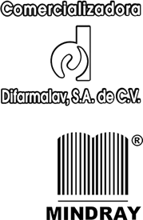
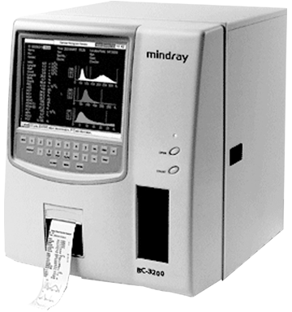

Bc 3200 hematología

CARACTERÍSTICAS:
• Mínimo mantenimiento
• Procesa 60 muestras por hora
• Capacidad de analizar muestras en tubo cerrado o abierto con un mínimo volumen de muestra de 13 microlitros de sangre total o suero
• Capacidad de utilizar modo prediluido con volumen de muestra de 20 microlitros
• Tubo Muestreador (Rack) de 4 posiciones para evitar el contacto con el usuario utiliza tubos de 15 Ml, 5 Ml, 3 Ml
• Micromuestras de 13 microlitros
• Determina 19 parámetros.
• Conteo de diferencial en 3 partes de linfocitos, (% y #) células de tamaño medio (% y #) y granulocitos (%, #)
• Reporte de resultados en gráficos: WBC, RBC, y PLT
• En porcentajes o números absolutos en pantalla o papel
• Principio de medición por impedancia ( dos cámaras independientes) y fotometría para hemoglobina
• Utiliza reactivos libres de cianuro para no dañar el medio ambiente
• Mínimo gasto de reactivos
• Programa de mantenimiento diario automático
• Calibración automática
• Control de Calidad integrado
• Analizador con calidad certificada: CE, ISO: 13485
• Manual en español
Software:
• Español
• Capacidad para introducir información demográfica
• Almacenamiento de 35,000 muestras con histogramas
• Puerto de Comunicación para Interfase
ESPECIFICACIONES TÉCNICAS:
Parámetros
WBC, Lymph#, Mid#, Gran#, Lymph%, Mid%, Gran%, RBC, HGB, HCT, MCV,
MCH, MCHC, RDW-CV, RDW-SD, PLT, MPV, PDW, PCT, e histogramas para
WBC, RBC y PLT.
Principio: Resistencia eléctrica para el conteo de WBC, RBC, y método PLT y
SFT para hemoglobina.
Performance
Parámetro Rango lineal Precisión (cv%)
WBC (10^9/L) 0.0 – 99.99 3 (4.0 – 15.0)
RBC (10^12/L) 0.00 – 9.99 2 (3.00 – 6.50)
HGB (g/dL) 0 – 300 2 (110 – 180)
MCV (fL) 0.5 (80.0 – 110.0)
PLT (10^9/L) 10 – 999 5 (200 - 500)
Volumen de muestra
Sangre total 13 uL
Prediluida (de capilar) 20 uL
Procesamiento de muestras: Un tubo cerrado con alojamiento para 4 tubos
de QC, 1.5 mL, 3 mL o 5 mL.
Cantidad de muestras por hora: 60 muestras por hora.
Pantalla: Tipo cristal líquido a color. Resolución de 800 x 600 pixeles.
Menú: Conteo, Modo simple, Revisión, control de calidad, configuración,
servicio, Calibración, ayuda, Apagado.
Puertos: 2 seriales RS232, 1 paralelo de impresora (opcional), 1 interfase de
teclado y 1 lector de código de barras (scanner opcional).
Impresora interna (opcional)
Impresora de papel térmico, ancho de papel 50 mm. y varios formatos de impresión.
Medio ambiente de funcionamiento
Temperatura 15 °C ~ 30 °C
Humedad 30% ~ 85%
Condiciones eléctricas: AC 100V-240V, 50/60 +/-1Hz
Dimensiones: 45.7 cm. Alto x 39.1 cm. Ancho x 41.5 cm. Profundidad.
Peso: 25 Kg.
DATOS COMPLEMENTARIOS: Para mayor información llamar a:
COMERCIALIZADORA DIFARMALAV, S.A. DE C.V.
Teléfonos: 01 222 594-3465, 755-3753, 755-3752
Lada sin costo: 01 800 DIFARMA, 01 800 161-6707
(01 800 343 2762)
e-mail: difarmaventas@hotmail.com
www.difarmalav.com.mx